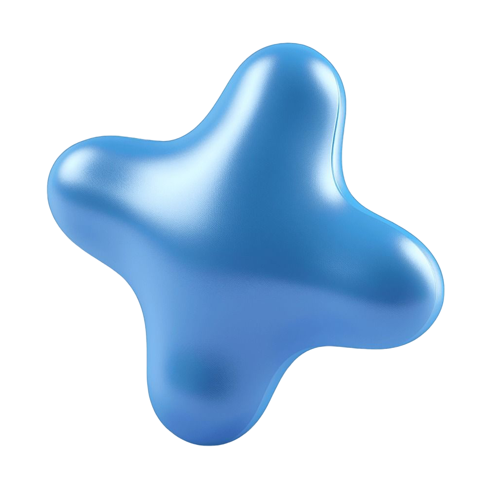
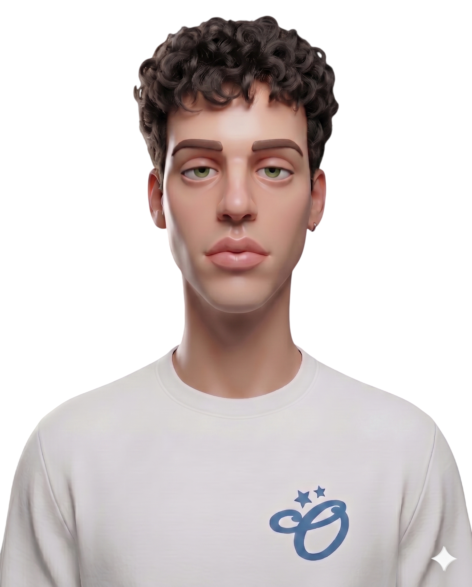

Настя Нерадовских
Ведёт сценарий «Все кейсы»: опыт в продукте, разбор карьеры и ответы на интервью.
Product management · карьера в IT
Старт в продукте · стажировка и первые шаги
Разберём ваш опыт, упакуем истории для собеседований и соберём понятный план шагов — без лишней теории.
Для студентов и начинающих продактов: CV, сопровод, отклики и разбор типовых вопросов — без воды, с упором на стажировку.


Ведёт сценарий «Все кейсы»: опыт в продукте, разбор карьеры и ответы на интервью.
Ведёт сценарий «Стажировка»: CV, сопровод, отклики и типовые вопросы на интервью.
Product Owner @ Альфа-Банк ранее — T2, Mars
Веду продукт в крупном банке и параллельно помогаю собрать ваш путь в product: от формулировки опыта до уверенных ответов на интервью — без шаблонов и надуманного жаргона.
Понимаю и банковский контекст, и динамику телекома, и логику FMCG — поэтому разбор резюме и кейсов опирается на реальные зоны ответственности PO/PM, а не на учебник.
Цифровые продукты · фичи, метрики, процессы кейсы, менторство, обучение
Запускаю фичи, работаю над ростом ключевых метрик и оптимизирую пользовательский путь. Работал с продуктами с большой аудиторией, ускорял time-to-market и выстраивал процессы в командах.
Победитель кейс-чемпионата Alfa Case Camp 2024. Ментор и эксперт на «Сочи Альфа Будущее»: 20 команд и 100 студентов — структурировал решения, усиливал продуктовую логику и доводил идеи до уровня сильных кейсов.
Выберите формат под задачу: разово разобрать ситуацию или пройти путь до оффера с опорой на практику и обратную связь.
i Состав встреч и оплата по этапам — по договорённости.
Пример того, как темы распределяются по занятиям — выберите в блоке «Форматы» карточку Сопровождение или Подготовка к интервью.
Типовой пакет сопровождения: от диагностики до разбора собеседований — по осям не недели, а номера занятий (шаги могут сдвигаться под ваш темп).
Цикл подготовки к интервью: продуктовые и поведенческие блоки, моки и доработка формулировок — тоже в привязке к занятиям, а не к календарным неделям.
Нажмите одну из двух карточек выше — здесь появится схема на 8 или 6 занятий в зависимости от формата.
/ Сопровождение
/ Подготовка к интервью
Чек-лист по подготовке к продуктовым и поведенческим вопросам — отправлю в Telegram.
1/4 За три созвона собрали резюме под PM: было стыдно отправлять — стало отвечать рекрутерам. Собеседование прошло спокойнее, чем ожидала.
Выберите канал — отвечаю в течение дня. Обычно быстрее всего в Telegram.
Пишите коротко: контекст, формат и цель — подберу удобный следующий шаг.